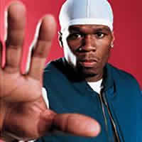

50 cent
Curtis James Jackson III, mais conhecido pelo seu nome artístico 50 Cent (Nova Iorque, 6 de julho de 1975),é um
rapper, ator, diretor, roteirista e empresário norte-americano. Ficou conhecido com o lançamento dos álbuns Get
Rich or Die Tryin' (2003) e The Massacre (2005). Get Rich or Die Tryin' obteve a certificação de platina seis
vezes pela RIAA e vendeu cerca de 13 milhões de cópias em todo o mundo. Seu disco The Massacre foi certificado
cinco vezes pela RIAA e vendeu 11 milhões de cópias.
Nascido em South Jamaica, Queens, Jackson iniciou no tráfico de droga com onze anos, durante a epidemia do
crack da década de 1980.[5] Depois de deixar o tráfico de drogas para começar uma carreira no rap, ele foi
baleado por sete tiros durante um incidente em 2000, depois de tal acontecimento Jackson recebeu uma
operação médica de alto risco, apesar que isso indicaria que o atirador era alguém a quem Jackson estava
devendo dinheiro por drogas.
algumas de suas musicas mas ouvidas:
- 50 Cent - P.I.M.P
- 50 Cent - Ayo Technology (feat. Justin Timberlake, Timbaland)
- 50 Cent - Down On Me
- 50 Cent - Disco Inferno50
- 50 Cent - Baby By Me
- 50 Cent - 21 Questions.
- 50 Cent - Just A Lil Bit.
- 50 Cent - Window Shopper

álbuns e contratos de 50 cent:
Após o lançamento do álbum Guess Who's Back?, Jackson foi descoberto pelo rapper Eminem e assinou contrato com a
Interscope Records. Com ajuda de Eminem e de Dr. Dre, que produziu o seu primeiro maior sucesso comercial, 50
Cent tornou-se um dos rappers com mais vendas no planeta. Em 2003, fundou a G-Unit Records, com seus parceiros
do grupo G-Unit: Tony Yayo, Young Buck e Lloyd Banks.